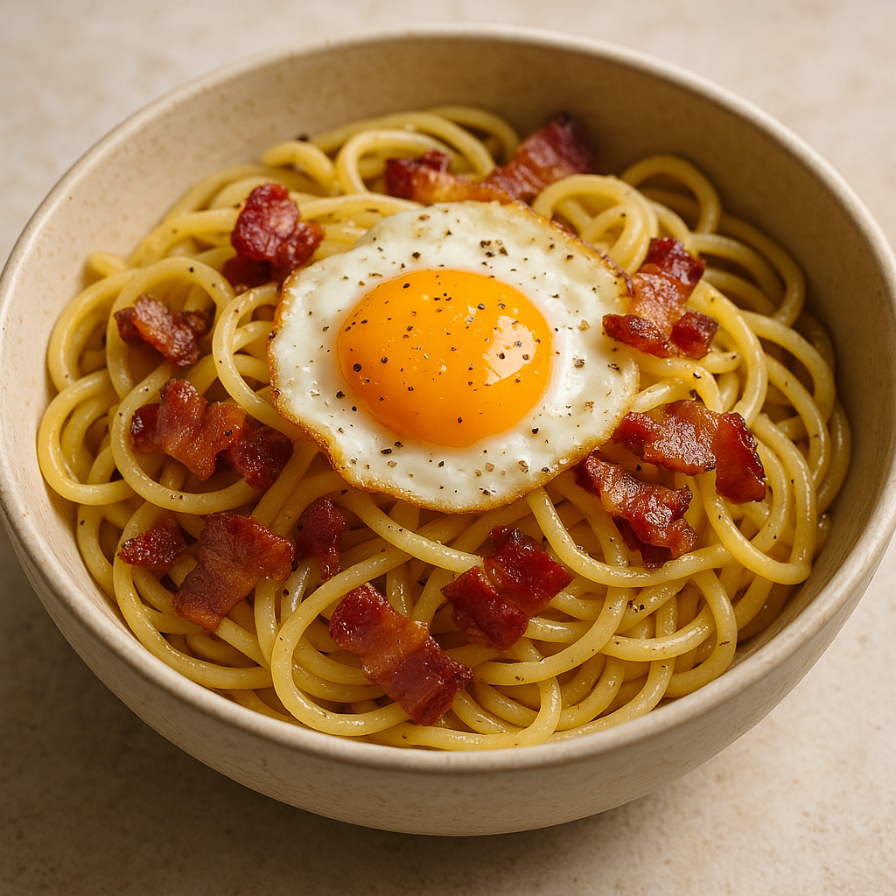

Pasta, bacon and eggs

This is a recipe of how to make pasta, bacon and eggs! (Large portions!)
Ingredients:
- 1 pack of bacon (180-200g each) per person
- 2-4 eggs per person
- 200-250g pasta per person
- oil or butter for frying
Cooking steps:
- Slice the bacon into desired shape and size, 2cm wide strips for example.
- Fry the bacon to desired crispiness, as you start frying the bacon, start bringing pasta water to a boil.
- Put pasta into the pot of boiling water while as soon as you can and cook the pasta according to instructions.
- Put fried bacon to the side, for example in the bowl you're going to eat from and cover with aluminium foil to keep warm.
- Start frying eggs, if your pasta is done before the eggs, start draining the pasta!
- Assemble the bowl of food and enjoy! Tip for ketchup lovers... go for it!